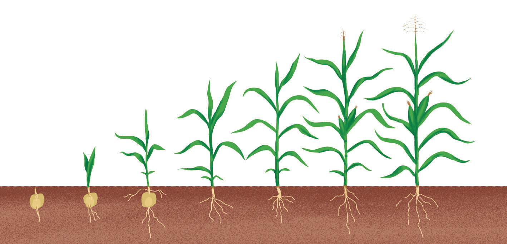
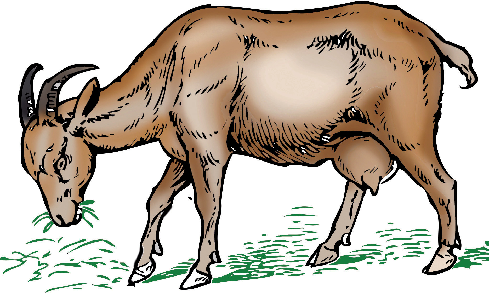

Pia, mimea hukua kwa kuongezeka kimo. Chunguza Kielelezo namba 3.

Kielelezo namba 3: Hatua za ukuaji katika mimea
Vilevile, viumbe hai huzaliana. Kwa mfano, mimea huzaliana kwa kutoa mbegu. Wanyama huzaliana kwa kuzaa watoto au kutaga mayai.
Chunguza Kielelezo namba 4, kisha jibu maswali yanayofuata.

Kielelezo namba 4: Mbuzi akila majani
SAYANSI MEMKWA 2.indd 4
21/08/2021 11:22